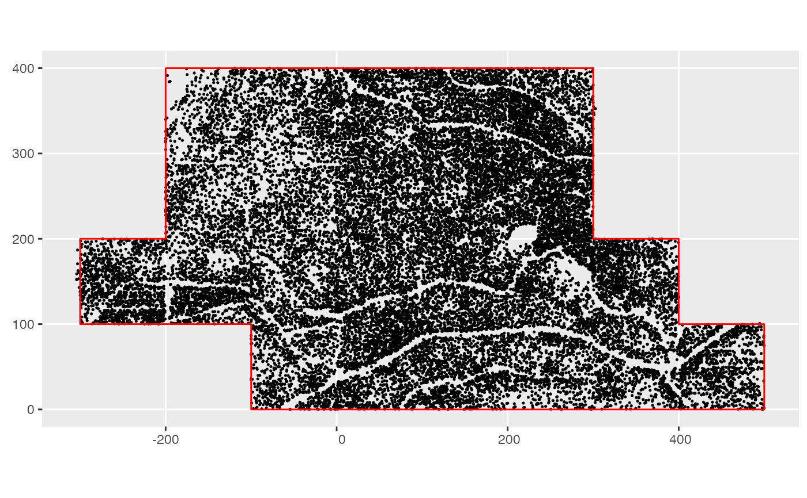

Boundary region for Bigwoods defined in terms of (x,y) vertices of a polygon.
study_region_bw
A sf spatial features polygon
Other Big Woods data:
census_2008_bw,
census_2014_bw,
species_bw
Other example data objects:
blocks_ex,
census_1_ex,
census_2008_bw,
census_2014_bw,
census_2_ex,
comp_bayes_lm_ex,
focal_vs_comp_ex,
growth_ex,
growth_spatial_ex,
growth_toy,
species_bw,
study_region_ex
library(ggplot2) library(sf) # Convert all 2008 plot stems to sf object census_2008_bw_sf <- census_2008_bw %>% st_as_sf(coords = c("gx", "gy")) # Plot stems with plot boundary ggplot() + geom_sf(data = census_2008_bw_sf, size = 0.25) + geom_sf(data = study_region_bw, color = "red", fill = "transparent")